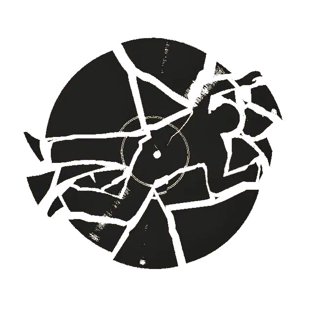
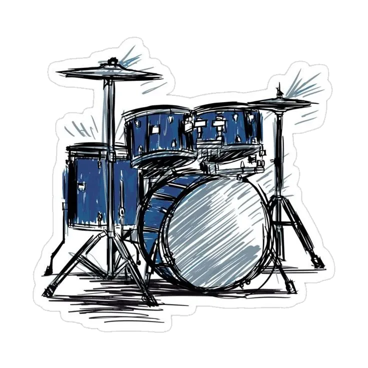
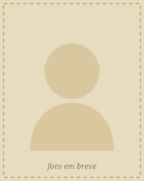
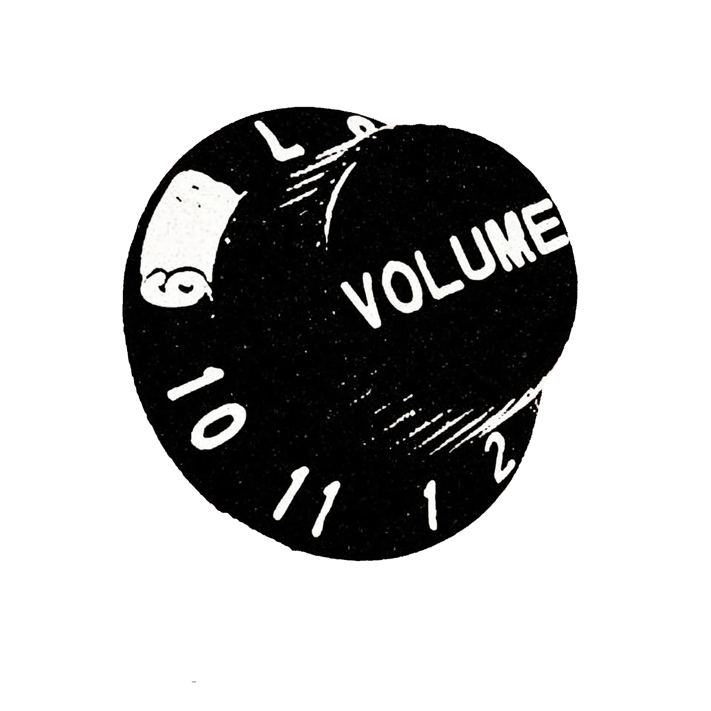
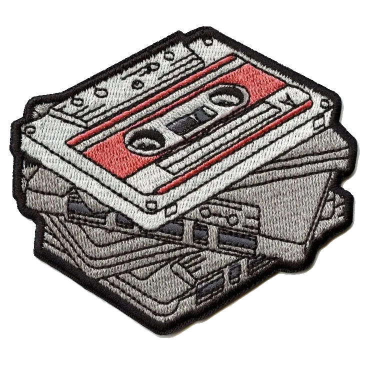
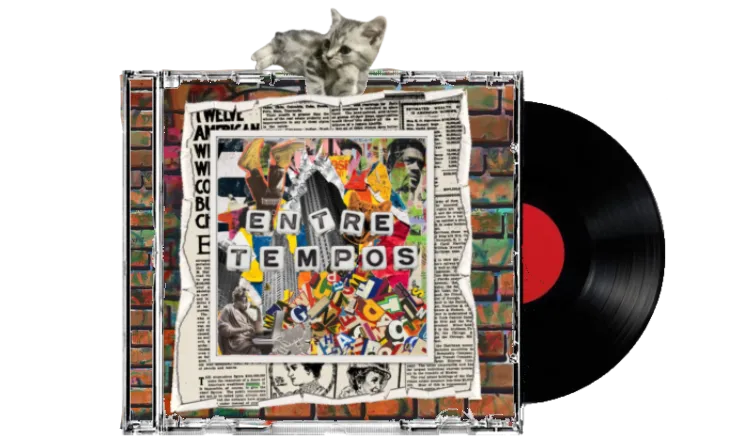

Humberto Gonçalves Fernanda Laiz Ferreira da Silva
Fernanda Laiz Ferreira da Silva

sons que habitam o tempo


músicas autorais
Aqui você encontra os talentos musicais de quem faz parte desta revista. São apresentações vocais, instrumentais e composições criadas pelos próprios alunos, revelando criatividade, dedicação e paixão pela música.
Cada apresentação carrega um pouco da personalidade de seu autor seja por meio da voz, de um instrumento ou de uma melodia original. Este é um espaço para compartilhar sons, emoções e histórias transformadas em música.



Humberto Gonçalves
Fernanda Laiz Ferreira da Silva